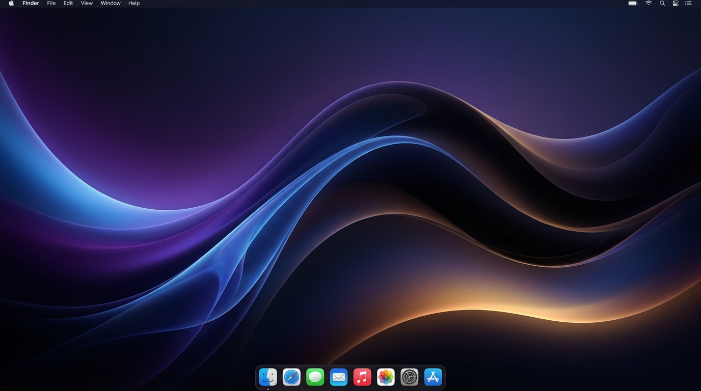

Dynamic Island.
Native on your Mac.
Turn your camera notch into a fluid, living command deck. Effortless Spotify & Apple Music controls, 1-click meeting joins, a temporary drag & drop file pocket, and focus timers.

Design Sprint • Atoll UI
Drop files here or click to stage
Files stay in memory until you drag them out
Everything you need.
Zero distractions.
Atoll was crafted from the ground up in Swift and AppKit. It lives in your notch without stealing focus, hogging battery, or invading your privacy.
Spotify Connect & Apple Music
Play music from your iPhone, iPad, or Mac. Atoll’s GCD polling engine catches track changes in under 0.7s with 0ms disk cached album art and multi-artist parsing.
Smart Meeting Alerts & Chrome Multi-Account Routing
When it’s time for your call, Atoll pops down from the notch for a few seconds with a 1-click Join button. It reads the calendar event’s email to open the exact Google Chrome profile (Work vs Personal), or focuses an already-open meeting tab without creating duplicate tabs.
Drag & Drop File Pocket
Grab a screenshot or file and drop it into the notch. It hovers conveniently on top while you change Spaces or switch full-screen apps, ready to be dropped into Slack or Mail.
Peripheral Focus Timer
Set 5, 15, or 25-minute Pomodoro timers. Shows a monospaced countdown on the right ear of the notch without cluttering your menu bar or active work area.
Smart Display Multi-Monitor
Understands external screens. Automatically anchors to the built-in Retina display with the camera notch, and stays politely tucked away from secondary studio monitors.
Pure Swift & Zero Bloat
Not an Electron wrapper. Compiled with Apple’s native Swift toolchain into a tiny 704 KB bundle. Consumes less memory than a single browser tab, with zero idle battery impact.
Control everything
from your fingertips.
Global hotkeys configured right out of the box.
Toggle Island
Expand or collapse the Dynamic Island from anywhere
Pin Expanded
Keep the island open while taking meeting notes or monitoring timer
Dashboard View
Jump straight to Music controls and Upcoming Calendar meetings
File Pocket
Instantly reveal your staged files ready to drag out
Focus Timer
Start, pause, or reset your focus session with one keystroke
Instant Collapse
Dismiss the island instantly back to its compact notch state
Frequently Asked Questions
Atoll is free, open-source software built independently without Apple's /year developer fee. Because of this, macOS Gatekeeper shows a standard security alert for downloaded files.
To open it in 5 seconds:
- Click Done on the warning dialog (do not move to bin).
- Open System Settings > Privacy & Security.
- Scroll down to the Security section and click "Open Anyway" next to Atoll.
- Alternatively, right-click (or Control-click)
Atoll.dmgin Finder and select Open.
Atoll requires macOS 14.0 Sonoma or macOS 15.0 Sequoia (and newer). It is fully compiled as a Universal binary for Apple Silicon (M1, M2, M3, M4) and Intel Macs.
Yes! On Mac desktop displays or MacBooks without a physical notch, Atoll smoothly renders as an elegant floating capsule centered at the top of your display, behaving identically to the physical notch experience.
No. Atoll is built with pure Swift and AppKit. When idle, CPU consumption is 0.0%, and memory usage averages under 25 MB. We don't use heavy web technologies or Electron.
Even when you start playing music on your iPhone or iPad via Spotify Connect, Atoll's dedicated background queue polls Spotify desktop state every 750ms using non-blocking AppleScript queries with zero UI hitching.
Never. Atoll is 100% offline. Calendar access uses Apple’s native EventKit APIs strictly on your device to display meeting links. No analytics, no telemetry, and no account required.
Ready to elevate your Mac?
Download Atoll today and experience your notch like never before. Instant install, lightweight, and completely free.
Universal DMG Build • Code signed with designated identifier app.atoll.desktop